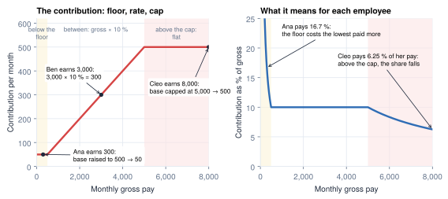
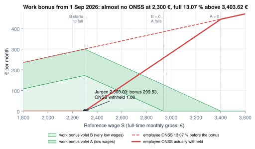
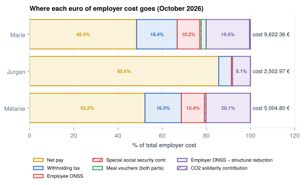

Contributions: employee and employer
A rate, a base, a floor, a cap, and the reductions that make low wages cheaper
- Describe any social contribution with five parameters: base, rate, floor, cap and who pays
- Explain why a capped contribution is regressive and an uncapped one is not
- Explain how low-wage reductions work, and why they make a raise expensive
- Handle contributions computed over a quarter or a year, not a month
- Compare the employer cost of three employees, and say why rates must be stored with dates
Mélanie pays 522.80 € of social security on 4,000.00 €. Jurgen pays 1.08 € on 2,300.00 €. Same law, same 13.07 % rate. Some countries shape contributions with a cap; Belgium has none and uses reductions instead. Both are variations on one small model.
What a social contribution is
A social contribution (social security contribution, social charge, national insurance; some countries say payroll tax) is a compulsory payment, computed on pay, that finances social insurance: pensions, health care, unemployment, family benefits. Unlike income tax, it is tied to the job and usually paid by both sides: an employee share, deducted from the gross, and an employer share, paid on top of it.
Three things follow from that definition:
- It is computed per period, on the pay of that period. No yearly estimate, no settlement afterwards, unlike withholding (Chapter 4).
- It buys rights. Pensions and benefits are often computed from the pay declared for contributions, so a wrong base can cost the employee later, not only the fund now.
- Each fund is a small formula. A base, a rate, and sometimes a floor, a cap and a reduction: the next section takes it apart.
Anatomy of a contribution
A contribution is a percentage of the pay, with two limits. Take one imaginary fund with round numbers: 10 % of gross pay, with a minimum base of 500 and a maximum base of 5,000 a month, and three employees.

- The rate applies in the middle band. Ben earns 3,000 and pays 3,000 × 10 % = 300.
- The floor is a minimum base: below it, the fund charges as if the pay were 500. Ana earns 300 and still pays 50, that is 16.7 % of her pay. Some funds use a minimum contribution instead.
- The cap is a maximum base: above it, nothing more is due. Cleo earns 8,000 and pays 500, only 6.25 % of her pay. A cap makes a contribution regressive: the higher the pay, the smaller the share.
- Reductions. Some laws then subtract a reduction, for low wages or for target groups; Jurgen's case below.
Every country's contributions are a combination of these knobs:
| Knob | Question | Variants |
|---|---|---|
| Base | which earnings count? | gross; basic only; basic + housing |
| Rate | how much, for whom? | one per fund; by side, nationality or sector |
| Floor | minimum base or amount? | none; a minimum contribution |
| Cap | a ceiling? | none; per month; per year to date; tiers |
| Who pays | employee, employer, both? | employer only for accident funds |
| Reductions | who pays less? | low wages; first hires; target groups |
Around the world
- United States: Social Security has a yearly cap tracked year to date; Medicare has none.
- India: provident fund on basic salary; state insurance only below a wage threshold.
- Saudi Arabia: on basic + housing; the employee share only for nationals.
- Mexico: on an integrated daily wage, capped at 25 × a legal reference unit.
- Kenya: pension in two tiers between a lower and an upper limit.
Case study: MyVidangeCompany's contributions
Belgium sits at one end of the scale: one office (ONSS) collects everything, the employee pays one rate on an uncapped base, and the employer pays a sum of rates on the same base.1
| Mélanie | Jurgen | Marie | |
|---|---|---|---|
| Contribution base | 4,000.00 | 2,300.00 | 7,500.00 |
| Employee 13.07 % | 522.80 | 300.61 | 980.25 |
| Low-wage reduction | 0.00 | −299.53 | 0.00 |
| Employee contributions withheld | 522.80 | 1.08 | 980.25 |
| Employer 25.12 % | 1,004.80 | 577.76 | 1,884.00 |
With no cap, Marie pays the same 13.07 % as Mélanie. The employer rate is a sum of components, each with its own dates: 25.13 % in the first three quarters of 2026, 25.12 % in the fourth, because a 0.01 % asbestos fund is collected only until September.3
In Odoo. Odoo reads the employer rates from the social security office's official rate file, which includes small funds (closure fund, sector fund) the calculator leaves out: Mélanie's October employer contribution is 1,030.49 € in Odoo against 1,004.80 €.7
In practice
An employer rate is never "a number". Store it as components, each with its own dates. One combined constant would silently be wrong for Q4 2026.
Reductions for low wages
Many countries want low-paid jobs to be cheap and a low wage's raise to reach the pocket. They use reductions: an amount subtracted from the contribution, large for low wages, fading to zero as the wage rises.
flowchart LR
S["Reference wage<br/>full-time equivalent"] --> T{"Below the<br/>threshold?"}
T -->|"yes"| F["Full reduction"]
T -->|"in the fade-out band"| P["Reduction shrinks<br/>with each extra euro"]
T -->|"above"| Z["No reduction"]
classDef earn fill:#E3F4EA,stroke:#2E9E5B,stroke-width:2px,color:#1E293B;
classDef ded fill:#FBE5E5,stroke:#D64545,stroke-width:2px,color:#1E293B;
classDef emp fill:#EEE8F6,stroke:#7B5EA7,stroke-width:2px,color:#1E293B;
classDef tax fill:#E2ECF8,stroke:#2F6DB5,stroke-width:2px,color:#1E293B;
classDef net fill:#FBF3D9,stroke:#C99A0E,stroke-width:2px,color:#1E293B;
classDef odoo fill:#E9EDF2,stroke:#475569,stroke-width:2px,color:#1E293B;
classDef law fill:#FDF0E1,stroke:#B45309,stroke-width:2px,color:#1E293B;
classDef neutral fill:#F4F6F8,stroke:#64748B,stroke-width:2px,color:#1E293B;
class S earn;
class T law;
class F,P,Z ded;Two design points follow:
- It is tested on a reference wage, usually the full-time monthly equivalent, so a part-month joiner does not look like a low earner (Chapter 5).
- In the fade-out band, a raise also shrinks the reduction, so its marginal cost is much higher than the rate suggests.
Case study: Jurgen
Belgium has a reduction on each side: the employee "work bonus" and the employer "structural reduction".

Worked example: Jurgen, October 2026
| Line | Amount (€) |
|---|---|
| ONSS 13.07 % × 2,300.00 | −300.61 |
| EmpBonus.A + EmpBonus.B Employee low-wage reduction | +299.53 |
| Employee contributions withheld | −1.08 |
| ONSSEMPLOYER Employer 25.12 % | 577.76 |
| ONSS_STRUCTURAL Employer low-wage reduction | −374.79 |
| Employer contributions after reduction | 202.97 |
Jurgen's taxable base goes up by the same 299.53 €: a contribution not deducted is taxed like salary. Mélanie gets no reduction.6
In Belgium
The work bonus has two parts, each a flat amount that fades to zero across a wage band (fully gone at 3,403.62 €). Its table changed five times in 2026.2 The employer reduction is a quarterly formula with parameters published each quarter (Q4 2026 not yet published, UNVERIFIED).4
In Odoo. Odoo computes the same employee reduction for Jurgen. Its employer reduction is 395.91 €, because the calculator reuses the Q3 parameters for Q4.7
Common pitfall
Computing the reference wage from "all remuneration of the month". In Belgium it leaves out the year-end premium, exit holiday pay and notice indemnities;2 including them takes Jurgen's reduction away in December. Every reduction defines the wage it tests.
Contributions over a quarter or a year
A cap or scale is often defined over a longer period than the payslip: a yearly cap (US Social Security) or a quarterly scale (Belgium). Each payslip withholds an advance and a later one regularises.
Belgium's example is the special social security contribution: a scale on the quarterly base, withheld monthly and fixed on the quarter's last payslip. It does not lower the taxable base.5 Mélanie pays 36.24 € a month; Marie, above the top of the scale, pays the maximum, 60.94 €. In December, Mélanie's year-end premium raises her quarterly base and her December payslip catches up (Chapter 6).
In Odoo. Year-to-date and quarter-to-date rules read the employee's earlier payslips of the period.
Employer cost: Mélanie, Jurgen, Marie

| October 2026 | Mélanie | Jurgen | Marie |
|---|---|---|---|
| Gross | 4,000.00 | 2,300.00 | 7,500.00 |
| Employer cost | 5,004.80 | 2,502.97 | 9,622.36 |
| Net pay | 2,614.26 | 2,143.05 | 4,663.91 |
| Employer cost per 1 € of net | 1.91 | 1.17 | 2.06 |
Reductions make a low wage cheap, but they fade out: Jurgen's 100 € raise costs MyVidangeCompany 155.12 €, Mélanie's 125.12 €.6 With a cap the picture flips at the top: above it, a raise costs only the gross.
In Odoo. Each contribution is a salary rule (ONSS, EmpBonus.A, M.ONSS, then employer rules after the net such as ONSSEMPLOYER). Rates and thresholds are dated hr.rule.parameter values (Chapter 21).
Summary
- Any contribution is a base, a rate, a floor, a cap, a payer and possible reductions. Learn the knobs once.
- A cap makes a contribution regressive above it; an uncapped contribution stays proportional.
- Belgium: one uncapped employee rate of 13.07 %; an employer rate that is a sum of dated components.
- Low-wage reductions fade out with a full-time reference wage: Jurgen pays 1.08 € instead of 300.61 €, and his 100 € raise costs 155.12 €.
- Caps and scales defined over a quarter or a year are withheld as advances and regularised later.
- Employer cost per euro of net: 1.17 for Jurgen, 1.91 for Mélanie, 2.06 for Marie.
-
ONSS, contributions (employee 13.07 %, branches, employer basic rate 19.88 %, wage moderation, 1.60 %, 108 %): https://www.socialsecurity.be/employer/instructions/dmfa/fr/latest/instructions/socialsecuritycontributions/contributions.html. ↩
-
ONSS, work bonus (2026/3 instructions; earlier quarters under
/fr/2026-1/and/fr/2026-2/): https://www.socialsecurity.be/employer/instructions/dmfa/fr/latest/instructions/deductions/workers_reductions/workbonus.html. ↩↩ -
ONSS, asbestos fund (collected in Q1, Q2 and Q3 2026): https://www.socialsecurity.be/employer/instructions/dmfa/fr/latest/instructions/special_contributions/other_specialcontributions/asbestosfunds.html. ↩
-
ONSS, structural reduction (Q3 2026; Q1 and Q2 under
/fr/2026-1/and/fr/2026-2/): https://www.socialsecurity.be/employer/instructions/dmfa/fr/latest/instructions/deductions/structuralreduction_targetgroupreductions/structuralreduction.html. ↩ -
ONSS, special social security contribution: https://www.socialsecurity.be/employer/instructions/dmfa/fr/latest/instructions/special_contributions/other_specialcontributions/specialsocialsecuritycontribution.html. ↩
-
Independent calculator,
research/numbers_be_calc.md, sections 2, 10.3 and 10.4. ↩↩ -
Payslips computed by Odoo master on the demo database,
research/numbers_be.md(Marie, February 2026, for the rate lines; October 2026 summary). ↩↩